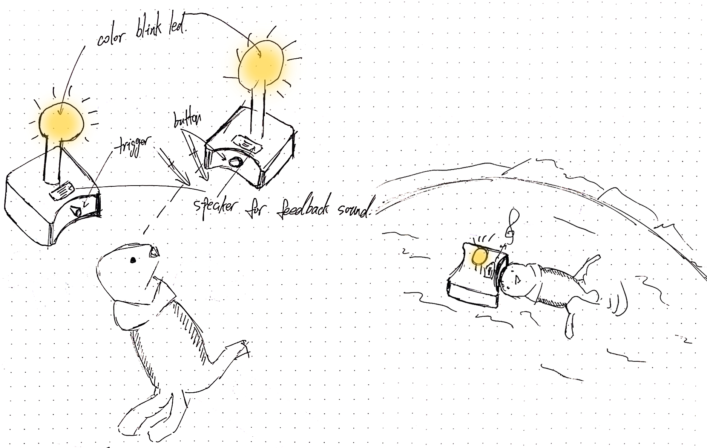
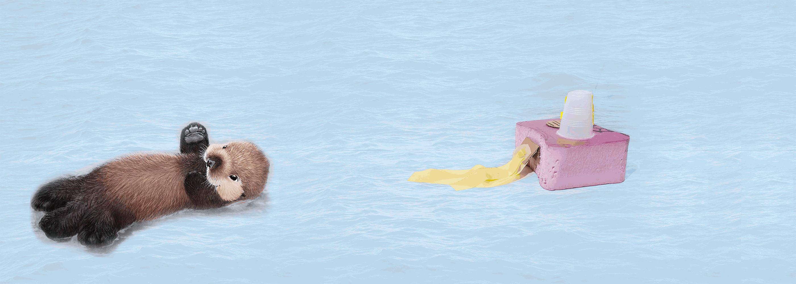

Enrichment Prototype ——
Enrichment for the sea otter orphans:
intro:
Two design proposals of surrogate devices that help the sea otter orphans learn and improve their skills of swimming and doing basic rolling and turning over actions in the water.
The surrogate devices substitute the roles that should originally be played by the moms and peers in the natural states.
Proposal:
I want to provide a floating object on the surface of the water, which can attract the attention of the sea otter pup. It serves as a "target" for the sea otter pup to swim towards. In this way, the pup's motivation in swimming is provided. Hopefully, the device can promote and enrich the pup's swimming learning process.

Inspiration:
— From observation of the precedent works of sea otter enrichment, it can easily find out that the sea otters were extremely active and interested in novel things. These toys are in fruitful colors and some of them have food contained or attractive scent diffused. They tended to touch, grasp, and hold the toys with their held in the forelimbs. If the toys are in motion, they tended to chase after them.
— From the video below(2:18 - 2:26), it can be discoverd that the sea otter pup, with primary ability of swimming, seemed to be aimless and bored while swimming. Later (2:33 - 2:37), it noticed a "target", a purple artificial kelp, and it seemed much more motivated.
Videp courtesy: HLN
Prototype:
The device is consisted of four parts: the floating unit, the trigger unit, the sound enrichment unit, and the light enrichment unit. Based on the research, I found that the colorful objects are extremely attractive to the sea otter. So I used colorful LED blink as the attraction to lead the sea otter pup to swim towards the device.
Ideal user scenario:
